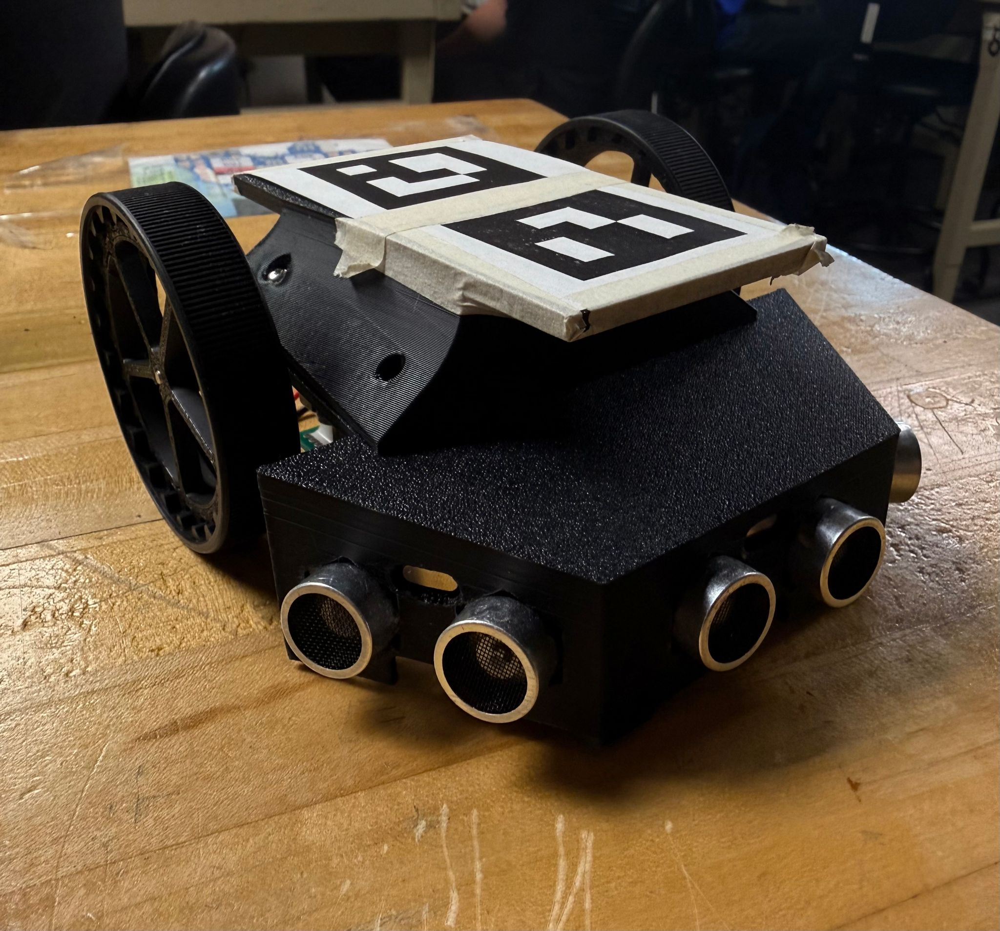

Autonomous Navigation Robot
A ground-up robot design — custom chassis, three ultrasonic sensors, and a navigation system that fused local obstacle detection with global positioning from an overhead camera feeding position data over MQTT. The robot had to find and arrive at multiple target points in an arena without human control.

The Challenge
The assignment was to build an autonomous robot capable of navigating a defined arena and reaching multiple target points without human control. The arena had an overhead fixed camera, and the infrastructure provided position data via MQTT — but the robot still needed its own local sensing to handle obstacles.
The interesting design challenge here is the sensor fusion problem: you have global positioning (where am I in the arena?) from the camera system, and local sensing (what's directly in front of me?) from on-board sensors. The navigation system has to combine both to make good decisions.
Chassis Design
I designed the chassis from scratch in CAD rather than buying an off-the-shelf kit. This took more time up front but gave full control over sensor placement, motor mounting geometry, and the overall form factor.
Key chassis design decisions:
- Wide wheelbase — more stable laterally, less likely to tip during sharp direction changes
- Low center of gravity — electronics and battery mounted low and centrally to minimize tipping tendency
- Dedicated sensor face — the front face was designed with three through-holes at specific angles (center, ±30°) for the ultrasonic sensors, so sensor positions were locked in by the structure rather than adjusted by hand
- Modular top plate — electronics mounted on a removable top plate for easy access during development and debugging

Chassis CAD model

Robot assembly / build photo
Local Sensing: Ultrasonic Sensors
Three HC-SR04 ultrasonic sensors provide distance readings to objects in the robot's path. The center sensor handles direct forward detection. The two side sensors, mounted at ±30°, detect obstacles that aren't directly ahead but will become relevant within the next move — giving earlier warning than a single forward-facing sensor.
The ±30° angle was a deliberate design choice rather than a default. A steeper angle (±45°) gives earlier warning but detects objects that may never actually be in the path. A shallower angle (±15°) misses obstacles until they're too close. At 30°, the coverage arc roughly matches the robot's turning radius, so an object that triggers the side sensor will intersect the robot's path if it continues on the same heading.
Noise filtering: Ultrasonic sensors produce occasional spurious readings, usually reflections off angled surfaces. To handle this, the code takes three readings per sensor per update cycle and median-filters them. The median filter discards outliers without introducing the lag of a moving average — if two of three readings agree, the outlier is discarded.
Global Positioning: MQTT + ArUco Markers
The arena had a camera mounted overhead that tracked robots via ArUco markers — fiducial patterns that encode an ID and allow a camera to compute the marker's exact position and orientation in 3D space. Think of them as QR codes that a computer vision library can localize in a camera frame.
The camera system processed the frames and published each robot's position and heading over MQTT at approximately 10 Hz. Our robot subscribed to its own position feed via a WiFi-connected microcontroller. This gave us "global" positioning — we always knew exactly where in the arena we were, expressed in arena coordinates, independent of any accumulated dead-reckoning error.

Navigation Strategy
With both global position (MQTT) and local obstacle detection (ultrasonic) available, the navigation loop worked as follows:
- Read current position and heading from the latest MQTT update
- Compute heading error to the current target waypoint
- If heading error is large: rotate in place to face the target
- If heading error is small: drive forward toward the target
- While driving, monitor ultrasonic sensors continuously
- If an obstacle is detected within threshold distance: stop, select a detour direction, execute a short avoidance move, then resume navigation to the target
- Declare arrival when within a distance threshold of the target, then advance to the next waypoint
Testing & Results
The robot successfully navigated to all required waypoints during testing. The main failure mode encountered during development was heading overshoot — the robot would rotate past the target heading and oscillate back and forth. This was addressed by adding a simple proportional term to the turn rate: the robot slows its rotation as it approaches the target heading.
The MQTT latency issue (described above) was the second significant challenge. The dead-reckoning fallback resolved most cases, but in areas of the arena with poor WiFi coverage, the robot would occasionally receive a burst of delayed updates and make several rapid corrections in succession. In a follow-on version, switching to a wired connection or a dedicated RF link would eliminate this.

Key Specifications
| Drive type | Differential drive (2WD + caster) |
| Chassis | Custom CAD design, 3D printed |
| Local sensors | 3× HC-SR04 ultrasonic (center + ±30°) |
| Global positioning | ArUco marker tracking via overhead camera → MQTT |
| Noise filtering | 3-sample median filter per sensor per cycle |
| Fallback | Encoder dead-reckoning during MQTT latency |